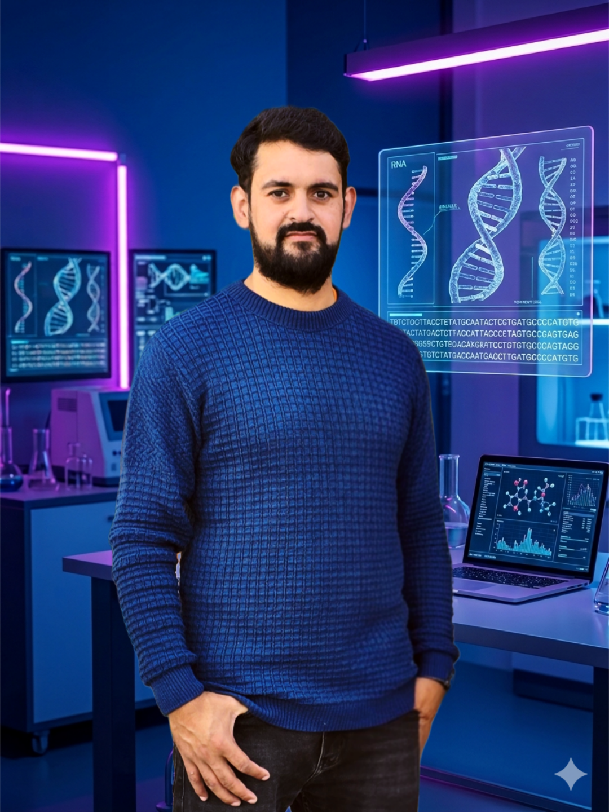

Decoding biological complexity through computational excellence.
Implementing programming skills in 3D Spatial Genomics and Bioinformatics.
Engineering scalable solutions at the intersection of life sciences and data.

My journey in science is rooted in the resilience of Kashmir, where I began my primary education within my local locality before moving to Bijbehara town for my graduation studies. These formative years shaped my ability to navigate complex environments with persistence, eventually leading me to the Islamic University of Science and Technology (IUST) for my MCA and now to the University of Kashmir, where I am pursuing a PhD in Computer Science. Currently, I serve as a Project Research Scientist at the Chromatin and Epigenetics Lab (CIRI), specializing in the cutting-edge fields of 3D Spatial Genomics and Bioinformatics. My core expertise lies in implementing advanced programming skills to decode intricate biological puzzles using high-performance computing pipelines. I possess a unique technical balance, combining doctoral-level research with expert root-level system administration and kernel debugging. I am recognized for my mastery in lossless system recovery and password restoration, ensuring total data preservation in critical research scenarios. Throughout my career, I have successfully managed large-scale multi-platform OS environments while providing professional software engineering services, including patched software solutions tailored for diverse professional purposes. My professional path is defined by the seamless fusion of hardware-level optimization and advanced data-driven discovery, proving that technological excellence can be forged from any beginning. I am dedicated to pushing the frontiers of integrated omics and treating biological data as an engineered information system for global discovery.
My objective is to pioneer the development of advanced computational models and AI-driven methodologies specifically designed to decode the complexities of 3D Spatial Genomics and chromatin organization. I aim to leverage my computer applications background to architect highly scalable, cloud-native frameworks capable of performing real-time multi-dimensional analysis on massive biological datasets. Through my doctoral research at the University of Kashmir, I seek to integrate advanced Machine Learning models into chromatin architecture studies to identify hidden organizational patterns previously invisible to traditional methods. I am dedicated to engineering open-source analytical tools and interactive visualizers that make abstract multi-omic landscapes actionable for the global scientific community. My vision involves developing high-fidelity predictive simulations that can forecast genomic structural changes under varying environmental and experimental conditions. I intend to lead multidisciplinary research teams at the nexus of Computer Science and Life Sciences, fostering a legacy of innovation through computational excellence and automated discovery. Ultimately, I strive to establish secure, ethically-sound computational environments that protect sensitive scientific data while accelerating the pace of therapeutic breakthroughs. I am committed to leveraging my root-level system management expertise to ensure the highest integrity of data infrastructures in academic research. My goal is to transform raw genomic data into a clear language of discovery, driving innovation that solves complex biological problems for the next generation.
University of Kashmir | Present
IUST
University of Kashmir (Bijbehara Town)
Vocational Certs
Python
Web Design
Graphics
OS Setup
Recovery
Tally
Bio-ML
C/C++
Root-level OS installation, maintenance, and lossless system recovery via advanced password breaking.
Professionally patched software solutions and cracked environments for diverse OS architectures.
High-performance pipelines for HI-C, Micro-C, RNA-Seq, ATAC-Seq, and Chip-Seq analysis.
Deployment and Version Control (Git) for Masters Level Projects and Internships.
Comprehensive analysis of 3D Spatial Genomics implementing advanced programming logic.
Professional automation and modeling using Excel, Access, Word, and PowerPoint.
Cricket
Volleyball
Cooking
Travelling
Nature Exploring
Long Walk